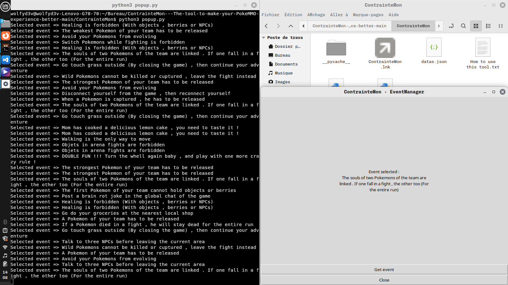

[Mes projets]
- JEUX
- Destroyed
Destroyed est un jeu en 3D que j'ai créé pour la Indie Park Game Jam 3 avec Godot Game Engine. Il se présente avec des graphismes volontairement pixélisés grâce à un shader qui s'applique sur tout l'écran. Les déplacements et l'histoire raconté sont tous deux étranges pour l'un et parfois floue pour l'autre. Créant une expérience intéractive engagée courte qui dénonce.
Dépôt Github
- Unseen goblins
Unseen goblins est un jeu en 2D que j'ai créé pour la Godot Wild Jam #82 Game jam avec Godot. Avec des graphismes qui mélange pixel art et dessin numérique avec une mécanique de gameplay simple: éliminer tous les gobelins qui sont visibles que si ils sont près du joueur. La propriété modulate est magique pour cela!
Dépôt Github
- WindWolf
WindWolf est un navigateur web aux fonctionnalités basiques. Il a été créé en Python en utilisant la library PyQT5, avec le module web de ce dernier PyQtWebEngine. Il ne marche que sur Linux en version compilée. Il supporte comme moteurs de recherche DuckDuckGo et Ecosia (interchangeable dans les paramètres), et est équipé d'un système de thème qui peut être changé.
Dépôt Github
- SITES
- WolfY_CorpCompanyWebsite
Ce site est celui d'une pseudo corpration qui n'existe pas vraiment que j'ai inventé. Il a été pour moi un moyen de me faire découvrir les bases de la création de sites, et de son hébergement sur Github Pages.
- AUTRES
- Server Web en local
J'ai créé mon propre serveur web qui tourne en local. Sur un ancien ordinateur portable j'ai installé la distribution Linux AntiX dessus pour sa gestion très optimisée des ressources, en plus de Apache2 qui permet de faire en sorte qu'il agisse comme un serveur web. J'ai ouvert les ports 80 et 443 de ce dernier, créé le site hébergé, en plus d'un script bash pour facilité la mise à jour du site du serveur en clonant le contenu d'un dépôt Github dédié.
- ContrainteMon

Un outil codé en Python doté d'une interface faite avec tkinter qui donne une règle aléatoire à suivre parmis une liste dans un fichier json. La règle donnée est prédéfinie par rapport à sa probablilité de l'être qui est calculée au préalable. C'est un vieux projet que j'ai créé quand j'étais au lycée, quand je voulais me donner des règles à suivre sur un jeu.
Dépôt Github